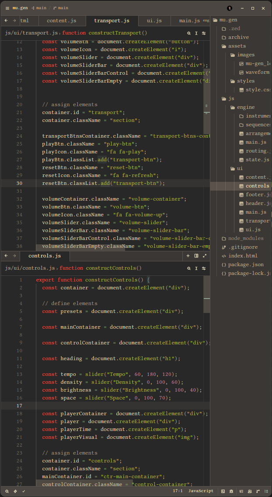
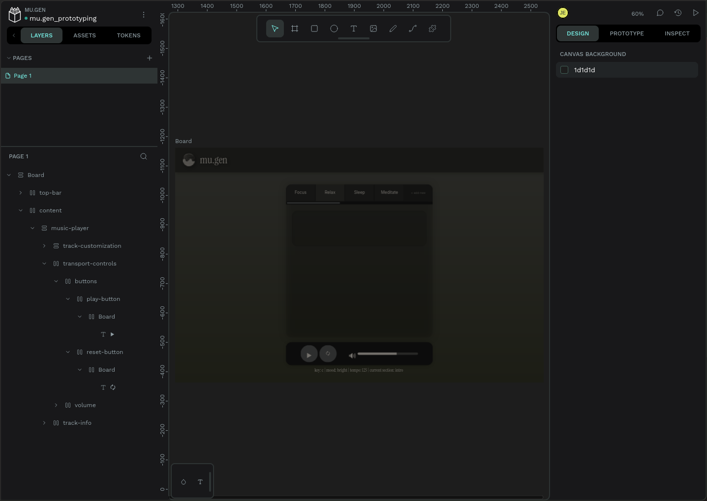
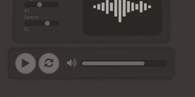
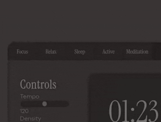
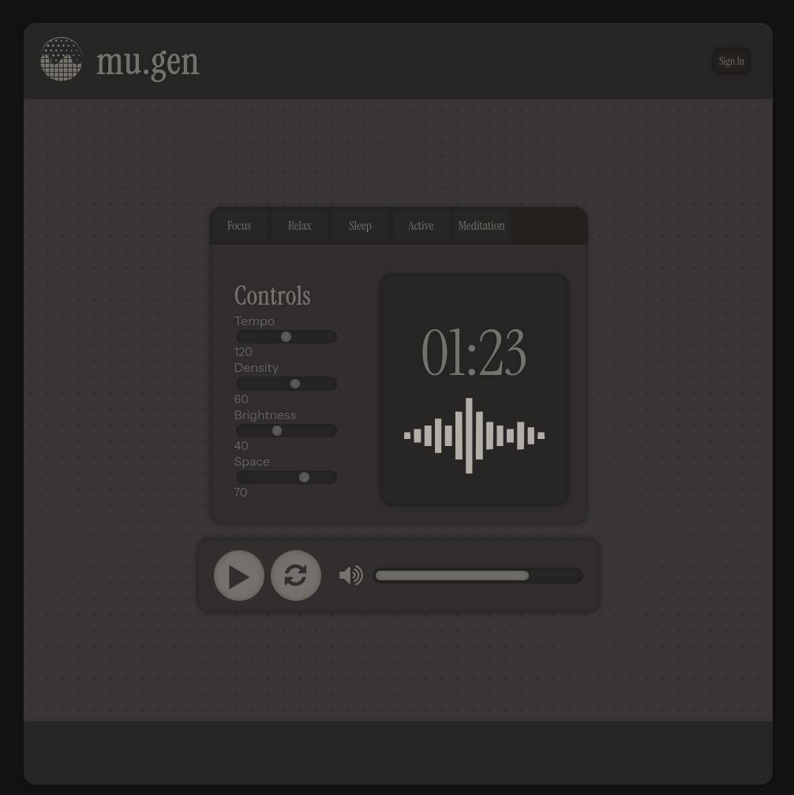

Project Overview
- Type: Frontend Development
- Role: UX Engineer / Frontend Developer (Solo)
- Timeline: 2 weeks
- Goal: Create an initial frontend and UI system for my project mu.gen with HTML, CSS, and JS
The Context
I have always had a personal interest in the world of audio and music technology. Recently, I have used various functional audio apps, and with all of them I have ran into the same issue: The musicality and sounds themselves are pre-made. Some apps of this kind will procedurally arrange existing audio, thus only allowing for so much novelty. The idea of functional music is for it to be truly in-the-background, and when I would hear the same sounds again and again, I found myself thinking about the music instead of the work, relaxation, sleep, or other activity at hand.
And so, I thought of mu.gen. The premise is it uses on-the-fly synthesis, composition, and arrangement to create truly unique tracks that are formed algorithmically to fit any given context you choose.
Clarification: I do not plan on it being an AI app in any way, despite the name. It is procedurally generative audio.
The Approach
Starting the Project
I started with creating a foundational backend architecture for the music generator itself initially using JavaScript and Tone.JS.

I quickly found how complicated creating a procedural music system would take, so I decided that for the scope of this project I would benefit from prioritizing the frontend development as the highest-leverage work. I got enough working to serve as a basic proof of concept for the system itself though.
Some of the things I built are:
- Modular audio signal path routing setup
- Numerous programmed synths that could be played via sequences
- Procedural arrangement system for song sections
- State management to change various aspects of the song
What I ultimately decided what would be best for the project is for me to get a working frontend before I continue delving into the specifics of the sound engine itself; especially as frontend development is my highest-leverage skill.
UI Conceptualization
I wanted to ensure that I have a good understanding of what I was going to be building, so I first designed a rough prototype in Penpot.
I usually don't spend too long on the visual prototyping phase too long; I really just like to get a basic structure and visual aesthetic started to get a good idea of where to begin building.
As will be shown, this initial design prototype gave me a good direction for my final frontend design.

Frontend Development
When doing frontend development, I always aim to make the UI as modular as possible. This project was no exception. I needed to ensure that I was designing the frontend in such a way that it could:
- Actually function and communicate with the backend (such as play/pause)
- Be easily reconfigurable for different layouts
- Have components be generated via functions
Instead of writing a static html page, I opted to write the UI with JavaScript so I could achieve these goals and specifications.



Check the source code in my Github repository to see how I went about making this!
Takeaways
Aside from making progress with this large project of mine, doing this frontend design helped me sharpen my current skills and learn new practices.
In doing this project, I learned:
- Modular frontend design with JS
- Interactive UI state management
- Advanced CSS styling and animation
Having created this project with only HTML, CSS, and vanilla JavaScript, I am confident with my ability to translate my visual design intuition into functional frontend interfaces.